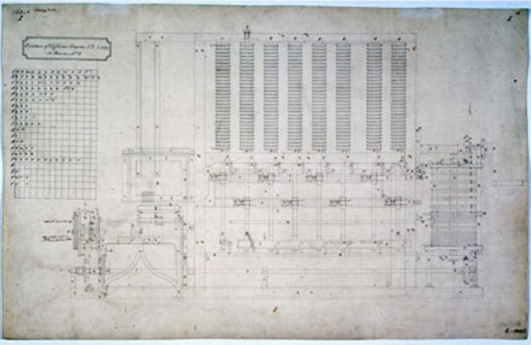

INF1FT

Augusta Ada Byron King, atalmente conhecida
com Ada Lovelace,
foi uma matemática e escritora inglesa.
NASCIMENTO: Augusta Ada Byron
10 de dezembro de 1815
Londres, Inglaterra
Reino Unido
MORTE: 27 de novembro de 1852 (36 anos)
Marylebone, Londres, Inglaterra
Reino Unido
NACIONALIDADE Britânica
CIDADANIA:Reino Unido da Grã-Bretanha e Irlanda
OCUPAÇÃO: matemática, programador, poetisa, cientista de computação, inventora, tradutora, escritora, engenheira
EMPREGADOR: Universidade de Cambridge
TÍTULO:Condessa de Lovelace
CAUSA DA MORTE: cancro do útero
Ada Byron é filha do ilustre poeta britânico Lord Byron.
Ela nasceu em Londres, Reino Unido, no dia 10 de dezembro de
1815 e morreu em novembro de 1852, ainda muito jovem, aos 36
anos. Embora o trabalho de Ada faça parte da história da ciência
e da tecnologia, seu pai nunca teve a oportunidade de reconhecer
a importância de sua filha. Um mês após o nascimento de Ada, Lord
Byron terminou o relacionamento com a mãe da menina, Anabella, a
Lady Byron, e se mudou para a Grécia. Quando Lord Byron morreu, Ada
tinha oito anos.
A mãe, Lady Byron, temia que a filha fosse se tornar poeta e escritora
igual o pai, mas a filha desde pequena, já demonstrava empenho pelo
conhecimento matemático, científico e tecnológico, mesmo não descartando
seu interesse e respeito pela poesia.
Seu envolvimento com tecnologia e programação começou cedo. Quando
tinha 17 anos conheceu a senhora Mary Somerville, tradutora das
obras do matemático e físico francês, Pierre-Simon Laplace, ou Marquês
de Laplace. Somerville tinha contatos com grandes inventores e
cientistas da época e estimulou que Ada estudasse matemática e
tecnologia. Com o tempo se tornaram amigas.
Em 1834, quando Ada tinha ainda 19 anos, foi convidada para um jantar
na casa de Somerville, onde encontrou Charles Babbage, que estava
trabalhando em uma nova espécie de máquina de cálculo. Mais tarde, a
calculadora de Babbage foi batizada de Máquina Analítica.
“E se uma máquina de calcular pudesse não apenas prever, mas pudesse
agir de acordo com essa previsão?”, disse Babbage durante o jantar,
quando conversavam sobre suas ideias. Ada ficou inquieta com o
interesse quase que platônico de Babbage, mas não tinha como ajudar.

Em 1843, aos 28 anos, casada com o conde de Lovelace e mãe de três filhos,
Ada traduziu um artigo de um pesquisador italiano, Menabrea. O artigo era
um resumo do funcionamento da máquina analítica de Babbage.
Ao mostrar a tradução para o próprio idealista da máquina, Babbage
sugere que Ada adicione suas notas pessoais, o que resultou em um
artigo três vezes maior do que o original. Nos comentários, Ada sugere
que a máquina poderia ser usada para produzir músicas complexas,
gráficos precisos e ser utilizada tanto para desenvolvimento prático
como científico.
Ela sugeriu a Babbage um plano de como a máquina poderia calcular os
números de Bernoulli, sequência matemática de números racionais
profundamente relacionada com a teoria dos números. Este plano é considerado
o primeiro programa de computador do mundo. Em 1979, o Departamento de Defesa
dos Estados Unidos desenvolveu uma linguagem de programação, e em homenagem à
autora do primeiro programa que foi rodado em uma máquina, chamou a linguagem de Ada.
Embora tenha vivido uma vida curta, assim como a de seu pai,
Ada é responsável por grande parte do desenvolvimento científico
e tecnológico do que conhecemos por computação moderna. A condessa
carrega o título de mãe da programação.
Ada Lovelace nasceu Augusta Ada
Byron em 10 de dezembro de 1815,
em Londres, na Inglaterra. Filha
do poeta George Gordon Byron, 6º
Barão Byron, e de Anne Isabella
"Annabella" Milbanke, Baronesa
Byron. George Byron esperava
ser pai de um menino e ficou
desapontado quando sua esposa
deu à luz uma menina. Augusta
recebeu esse nome por causa da
meia-irmã de Byron, Augusta Leigh,
e foi chamada de "Ada" pelo próprio
George.
Em 16 de Janeiro de 1816, Annabella, a pedido de George,
se mudou para a casa de seus pais em Kirkby Mallory levando
Ada com ela, que na época tinha apenas um mês de idade. Embora a lei
Inglesa desse ao pai a custódia total de seus filhos em caso
de separação, Byron não fez nenhuma tentativa de reivindicar
seus direitos, mas pediu para que sua irmã o mantivesse informado
sobre o bem-estar de Ada.Em 21 de abril, Byron assinou a
escritura de separação, com muita relutância, e deixou a
Inglaterra para sempre alguns dias depois. Além de não aceitar
bem a separação amarga, Annabella fez acusações sobre o
comportamento imoral de Byron, durante toda sua vida. Este
conjunto de eventos deixaram Ada famosa na sociedade vitoriana.
Byron não tinha um relacionamento com sua filha e nunca mais a
viu. Ele morreu em 1824, quando ela tinha oito anos. Sua mãe
era a única figura parental significativa em sua vida. Ada
não foi autorizada a ver qualquer retrato de seu pai até
seu vigésimo aniversário. Sua mãe se tornou Baronesa Wentworth em 1856.
Ada não era próxima de sua mãe e era deixada aos cuidados de sua avó
materna Judith Hon, Lady Milbanke, que a mimava. Porém, devido aos
costumes da época, Lady Byron teve de se comportar como uma mãe
amorosa aos olhos da sociedade. Ela enviava cartas para Lady Milbanke
onde falava sobre o bem-estar da menina, mas sempre com uma nota
instruindo a avó a guardar as cartas para que a mesma pudesse usá-las
para provar seu amor maternal. Em uma das cartas, Lady Byron se referiu
à Ada como “aquilo”: “Falarei com aquilo para lhe satisfazer, e não
para deleite próprio, e deverás ser grata quando aquilo estiver sobre
tua guarda”. Durante sua adolescência, Ada foi vigiada por conhecidos de
Lady Byron, a fim de lhe reportar qualquer sinal de desvio moral, a
menina os apelidou de “Fúrias” e dizia que inventavam histórias
exageradas sobre sua pessoa.
No início de sua infância, Ada se encontrava doente com frequência.
Aos oito anos de idade, a menina sofria de fortes dores de cabeça
que prejudicavam sua visão. Em junho de 1829, Ada ficou paralisada
após contrair sarampo, foi obrigada a ficar de repouso em sua cama
por quase um ano, o que afetou sua capacidade de andar. Em 1831, a
menina se locomovia com o uso de muletas. Mesmo após ter tido sequelas
devido à doença, Ada conseguiu desenvolver suas habilidades matemáticas e tecnológicas.
Aos doze anos de idade, Ada decidiu que queria voar, desejo que
lhe traria o apelido de “Senhora Fada” carinhosamente dado por
Charles Babbage. Ela então focou-se metodicamente em seu plano,
desenvolveu-o com cuidado, imaginação e amor. Em fevereiro de 1828,
Ada deu seu primeiro passo e decidiu construir um par de asas, algo
que demandou uma pesquisa de diversos materiais, como papéis, seda
a prova d’agua, arames e penas. Ela também estudou a anatomia
dos pássaros para encontrar a proporção exata entre o corpo e as
asas dos animais. Ada decidiu escrever um livro chamado “Flyology”,
podendo ser traduzido como o “Estudo do voo”, que foi ilustrado
com suas ideias. Ela decidiu que precisaria de uma bússola para
“atravessar o país pelo caminho mais curto” e vencer montanhas,
rios e vales. Seu último passo seria juntar o vapor à “arte de voar”.
No início de 1833, Ada teve um caso com seu tutor, e tentou fugir
ao seu lado após ter sido descoberta, mas foi reconhecida pelos
parentes do tutor, que contataram a sua mãe. Lady Byron, junto
a seus amigos, conseguiram esconder o incidente antes que virasse
um escândalo público. Ada nunca conheceu sua meia irmã, Allegra,
filha de Lord Byron e Claire Clairmont, a criança morreu aos cinco
anos de idade em 1822. Ada teve contato com Elizabeth Medora Leigh,
a filha da meia irmã de seu pai, Augusta Leigh, que a evitava
o máximo possível ao ser introduzida a Corte.
Vida adulta
Ada tornou-se amiga próxima de sua tutora Mary Somerville, que
a apresentou para Charles Babbage em 1833. Ela respeitava e adorava
Mary, as duas trocaram cartas por muitos anos. Dentre outros
conhecidos de Ada estavam os cientistas Andrew Crosse, Sir David Brewster,
Charles Wheatstone, Michael Faraday e o autor Charles Dickens.
Aos dezessete anos foi apresentada à Corte e ficou conhecida por
sua mente brilhante. Em 1834 Ada já frequentava a Corte com
frequência e passou a participar de vários de seus eventos.
Dançava com frequência e encantava as pessoas com seu charme
e era vista como uma moça delicada; já um amigo de seu pai,
John Hobhouse, a descrevia como “uma jovem mulher volumosa de
pele áspera, mas com traços semelhantes ao de um amigo,
especialmente os lábios”. Esta descrição foi seguida de um encontro
em 24 de fevereiro de 1834, onde Ada deixou claro que não gostava de
John, provavelmente devido a sua mãe, Lady Byron, que a influenciava
a não gostar dos amigos de seu pai. Mesmo após esta má impressão, os
dois viraram amigos mais tarde.
Ada casou-se com William 8th Baron King, em julho de 1835, e
tornou-se Lady King. Eles possuíam três casas: Ockham Park em
Surrey; uma casa de campo escocesa no vilarejo de Loch Torridon
em Ross-shire na Escócia; e uma casa em Londres. Os dois passaram
a lua de mel em Worthy Manor em Ashleu Combe, próximo à Porlock
Weir, Somerset. A mansão foi construída inicialmente para ser uma
cabana de caça em 1799 e foi reformada por William especialmente
para a lua de mel e mais tarde foi transformada em uma casa de
veraneio e passou por novas melhorias. Em 1845, a casa principal
da família ficava em Surrey, na Inglaterra, chamava-se East Horsley Towers
e foi reconstruída pelo arquiteto Charles Barry durante o movimento neogótico.
Eles tiveram três filhos: Byron, nascido em 12 de Maio de 1836; Anne Isabella,
apelidada de Annabella, nascida em 22 de Setembro de 1837; e o caçula Ralph Gordon,
nascido em 2 de Julho de 1839. Após o nascimento de Annabella, Ada sofreu de “uma
enfadonha e dolorosa enfermidade, e levou meses para se curar”. Ela
era descendente dos extintos Barões de Lovelace e, em 1838, seu marido
se tornou Conde de Lovelace e Visconde de Ockham, tornando-a
Condessa de Lovelace. Em 1843-1844, Lady Byron, mãe de Ada, indicou
William Benjamin Carpenter para ser tutor de seus netos e tutor “moral”
de Ada. William apaixonou-se por ela e a encorajou a expressar
quaisquer sentimentos reprimidos, dizendo que seu casamento significava
que ele nunca poderia agir inapropriadamente, mas quando ficou claro
que ele desejava ter um caso com Ada, ela rapidamente o cortou.
Em 1841, a mãe de Ada, Lady Byron, revelou à moça e à Medora (filha de Augusta Leight,
que era meia-irmã de Lord Byron) que o pai de Ada e Medora eram a mesma pessoa.
Em 27 de fevereiro daquele ano, Ada escreveu uma carta para sua mãe, dizendo “Não
estou nem um pouco surpresa, na verdade a senhora apenas me confirmou uma dúvida
que vem aterrorizando minha mente por anos, e que não tinha capacidade de lhe sugerir
que suspeitava de tal fato”. Ada não culpou seu pai pela relação incestuosa,
pelo contrário, ela culpou Augusta: “Temo que ela é inerentemente mais perversa
do que ele jamais foi”. Na década de 1840, Ada envolveu-se em diversos escândalos,
primeiro em relações extramatrimoniais e segundo em jogos de azar. Ela supostamente
perdeu mais de 3 mil libras ao apostar em cavalos. As apostas incentivaram-na a
criar uma associação com seus amigos que a levou a uma tentativa de criar um modelo
matemático ambicioso que resultava em sucesso em apostas grandes em 1851. Ada
falhou desastrosamente, perdeu milhares de libras para a associação e teve de
contar o ocorrido ao marido. Ela teve um relacionamento escondido com
John Crosse, filho do cientista Andrew Crosse, em 1844 e diante. John destruiu
maior parte das correspondências trocadas após a morte de Ada, como parte de
um acordo legal. Ela deixou como herança para John as relíquias que seu pai
lhe deu em vida. Em seus dias finais, Ada temia a ideia de que John seria
privado de visitá-la.
Educação
Mesmo quando Ada ficava doente durante sua infância, a menina continuava a
estudar.Com o objetivo de acabar com quaisquer sinais de insanidade
herdados de seu pai Lord Bryon, a mãe de Ada se certificou que a criança
aprendesse matemática desde cedo. Ada foi educada em casa, aprendia matemática
e ciências com William Frend, William King e Mary Somerville. Mais tarde
seria tutorada pelo matemático e lógico Augustus De Morgan. Aos dezessete
anos, em 1832, suas habilidades matemáticas começaram a emergir e o
interesse neste campo esteve presente durante sua vida adulta. Augustus
sugeriu em uma carta endereçada à mãe de Ada, Lady Byron, que as habilidades
matemáticas da jovem poderiam torna-la “uma investigadora matemática de primeira”.
Ada acreditava que a intuição e a imaginação eram fundamentais para
pôr em prática conceitos matemáticos e científicos de forma eficaz.
Ela valorizava a metafísica tanto quanto a matemática, sendo ambas
ferramentas para explorar "mundos invisíveis ao nosso redor".
Morte
Ada faleceu com a mesma idade que seu pai, aos 36 anos em 27
de novembro em decorrência de um câncer uterino, provavelmente
agravado pela sangria realizada por médicos. A doença perdurou
por meses, nos quais Annabella assumiu controle sobre quem visitava
Ada, excluindo todos seus amigos e confidentes. Sob influência de
sua mãe, Ada teve uma transformação religiosa e foi persuadida a se
arrepender de sua conduta e fazer de Annabella sua inventariante.
Ela perdeu o contato com o marido após confessar-lhe algo em 30 de agosto,
o que o levou a abandonar seu leito. Não se sabe o que ela disse. Ada
foi enterrada, como desejava, ao lado de seu pai na Igreja de Santa Maria
Madalena em Hucknall, Nottinghamshire. Uma placa escrita em latim em sua
memória e em memória ao seu pai foi feita na capela ao lado de Horsley Towers.
Primeiro programa de computador
Em 1842, Charles Babbage foi convidado a ministrar um seminário na
Universidade de Turim sobre sua máquina analítica. Luigi Menabrea,
um jovem engenheiro italiano e futuro Primeiro-ministro da Itália,
publicou a palestra de Babbage em francês e esta transcrição foi
posteriormente publicada na Bibliothèque Universelle de Genève, em 1842.
Babbage pediu a Lovelace para traduzir o artigo de Menabrea para o
inglês, adicionando depois a tradução com as anotações que ela mesma
havia feito. Lovelace levou grande parte do ano nesta tarefa. Estas
notas, que são mais extensas que o artigo de Menabrea, foram então
publicados no The Ladies' Diary e no Memorial Científico de Taylor
sob as iniciais "AAL".
Em 1953, mais de cem anos depois de sua morte,
as notas de Lovelace sobre a máquina analítica
de Babbage foram republicadas. A máquina foi
reconhecida como um primeiro modelo de computador
e as notas de Lovelace como a descrição de um computador e um software
Após um adoecimento, Ada passou a estudar matemática com Augustus de Morgan, que é conhecido até hoje por ser o primeiro professor de matemática da Universidade de Londres. Também voltou a ter contato com Babbage e descobriu sobre seu novo projeto: a Máquina Analítica, grande invento para o avanço da tecnologia.
A linguagem de programação Ada foi criada em
homenagem à Ada Lovelace pelo Departamento
de Defesa dos Estados Unidos. A documentação
da linguagem foi aprovada em 10 de Dezembro de 1980.
Em 1981, a Associação de Mulheres na
Computação criou o Prêmio Ada Lovelace.
Em 1998, A Associação Britânica de Computação
criou a Medalha Lovelace e em 2008 iniciou
uma competição anual para alunas. A Associação
Britânica de Computação é patrocinadora do
Lovelace Colloquium, que é uma conferência
anual para mulheres estudantes de graduação.
A Ada College é uma escola extra-curricular
focada em tecnologia localizada em Tottenham
Hale, Londres.
Em toda segunda terça-feira de
outubro, desde 2009, é comemorado
o Dia da Ada Lovelace, que
tem como objetivo “dar destaque
à mulheres na ciência, tecnologia,
engenharia e matemática” além de
“criar novos modelos para meninas
e mulheres”. Entre os eventos estão
a Maratona de edição da Wikipédia,
com o objetivo de aumentar a
representação das mulheres na
Wikipédia em termos de artigos e
editores, para reduzir preconceitos
de gênero. A Ada Initiative é uma
organização sem fins lucrativos dedicada
a aumentar o envolvimento das mulheres
no Movimento pela cultura livre e em
movimentos open source. Em 2009,
na ocasião da celebração do primeiro
Ada Lovelace Day, a artista plástica
Sydney Padua criou a história em quadrinhos
"The Thrilling Adventures of Lovelace and
Babbage", que ao mesmo tempo que
contava a história de Charles Babbage
e da condessa Ada Lovelace, também
apresenta uma leitura descontraída dos
dois. Em 2015 o quadrinho virou um livro,
de mesmo nome.
A Ada Developers Academy
em Seattle é uma academia
sem fins lucrativos com o
objetivo de aumentar a diversidade
na tecnologia, treinando mulheres
cis, trans e não-binários para se
tornarem engenheiras de software.
Em 27 de julho de 2018, o senador
americano Ron Wyden submeteu,
a designação de 9 de outubro de
2018 como Dia Nacional Ada Lovelace:
"Honrar a vida e as contribuições
de Ada Lovelace como uma das principais
mulheres em ciências e matemática".
A resolução (S.Res.592) foi considerada
e aprovada sem emendas e com um preâmbulo por
consentimento unânime.